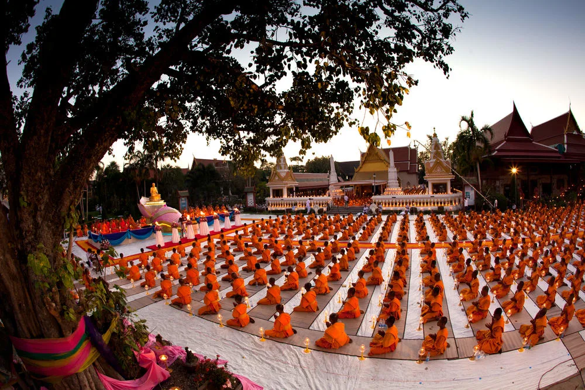
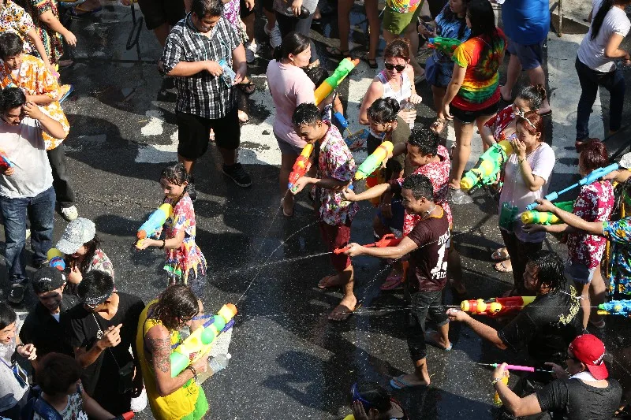

방콕 왕궁
시암 파라곤
아룬사원
왓 포
왓 프라깨우
황금불 사원
깡댕
똠양꿍
똠카까이
솜땀
팟타이
깽케우완카이
만불절 (마카부차) - 전국 사원에서 모든 제자가 모이는 축제
태국의 가장 큰 불교 행사로 스님들이 촛불과 꽃, 향을 들고 사원 주위를 도는 행렬이 장관을 이룬다. 사람들도 절에 찾아가 꽃이나 향을 바친다. 전국 곳곳에서는 물고기나 새를 방생하는 이벤트도 벌어진다. 이날은 왕궁 본당 입장이 제한되고, 주류 판매도 금지된다.
날짜 : 매년 음력 1월 15일 (2023년 2월 5일)
장소 : 왓 랏 프라 사원, 왓 사켓 및 태국 전역의 불교 사원
송크란 축제
태국식 새해맞이. 서로에게 물을 뿌리며 복을 기원하는 축제로 태국 최대 축제다. 세계 각국에서 이 축제를 즐기기 위해 수많은 젊은 여행자들이 모여든다. 35-40도의 폭염 속에서 물바가지를 쏟아붓는 짜릿한 재미.
날짜 : 매년 4월 13-15일
장소 : 카오산 로드, 싸남 루앙 및 태국 전역